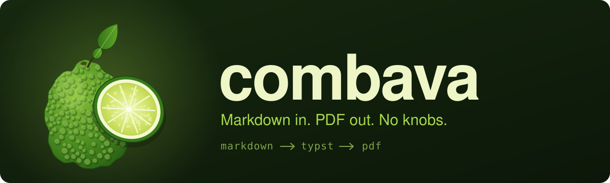
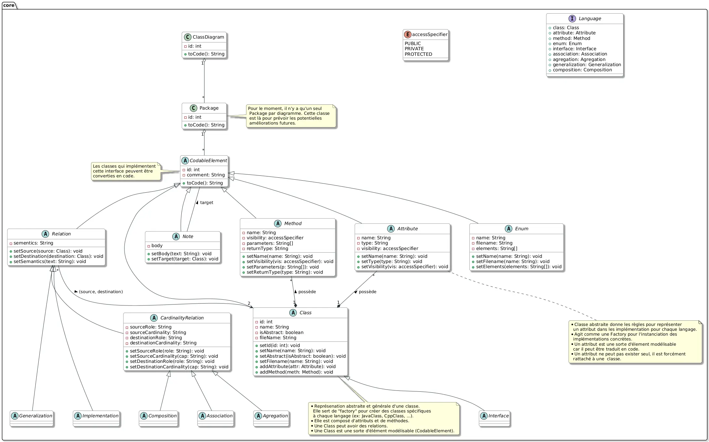
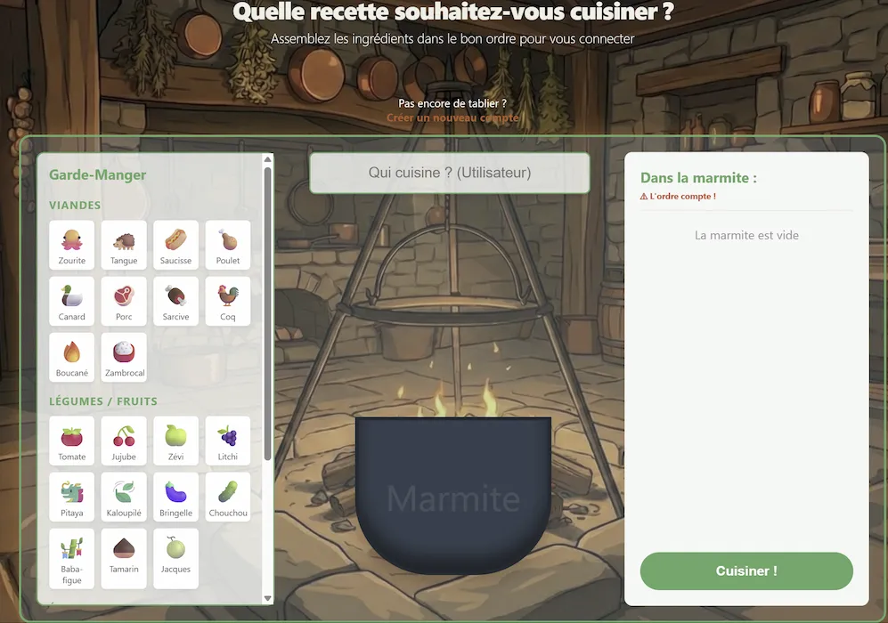
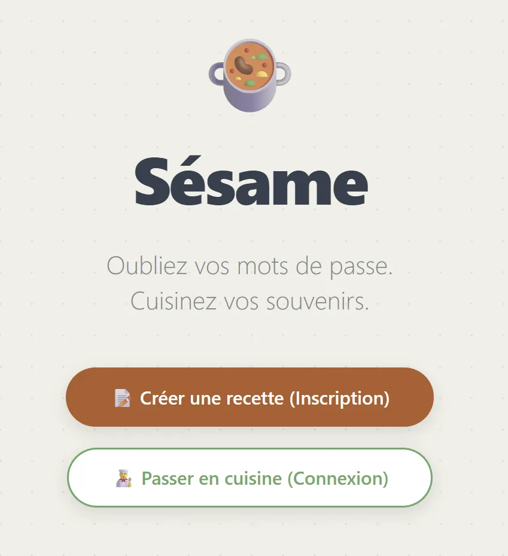
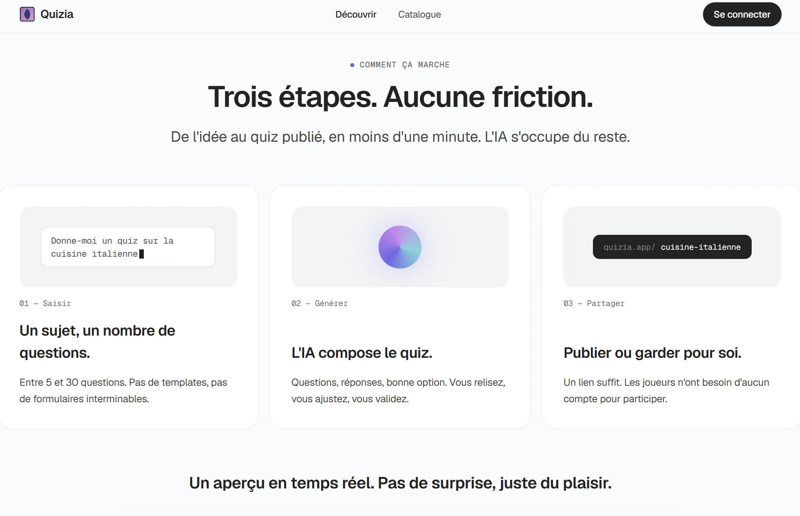

al3ph_zero
Engineering student. I work on system security and Rust, I play CTFs, and I bring a little too much math into everything.
Markdown in, finished PDF out: an opinionated report generator with nothing to configure.
You write Markdown with a small TOML header, and combava gives you a finished report: no style to tune and no template to set up. It makes the choices for you: one template, French typography, a closed list of header keys, and mistakes such as broken links, remote images or citations without a bibliography stop the build. A failed build never destroys the previous PDF. A core library transpiles Markdown to Typst, with diagnostics that point back to the exact line and column of the source, and Typst is built in, so there is no LaTeX or Pandoc to install. Read the documentation.

A hardened kiosk that cleans files from untrusted USB drives before they reach the network.
SAINE is a hardened fork of the CEA's usbsas framework: a standalone kiosk that copies files from an untrusted USB device to a trusted destination, so no workstation ever touches the device. The design is microkernel-style: every USB, SCSI and filesystem parser runs as its own user-space process under a dedicated seccomp and Landlock policy, and the whole pipeline resets between transfers. On top of the upstream project I added an encrypted upload destination over VPN, antivirus deep scanning, a QR-code transfer report and recipient selection in the GUI. I also built the surrounding platform: reproducible NixOS kiosk images for Raspberry Pi 5 (aarch64) and Zimaboard 2 (x86_64), full Nix cross-compilation, a signed update server, a Dagger CI/CD pipeline, and system hardening validated with Lynis.
PlantUML class diagrams turned into C++, Java and Python code.
It parses classes, interfaces, enumerations and the usual relationships (inheritance, implementation, composition, aggregation and association), and relies on the Abstract Factory pattern to keep diagram parsing fully decoupled from language-specific generation.

Log in by cooking: a password made of recipe ingredients.
Instead of typing characters, you build a recipe by dragging and dropping ingredients, each one mapping to a character. The idea is to rely on procedural memory rather than rote recall.


Describe a topic, get a complete quiz in seconds.
The AI writes the whole quiz from a topic and a number of questions, ready to share or keep private. Quizzes can also be built by hand, and a public catalog offers search, filtering and gameplay tracking.
